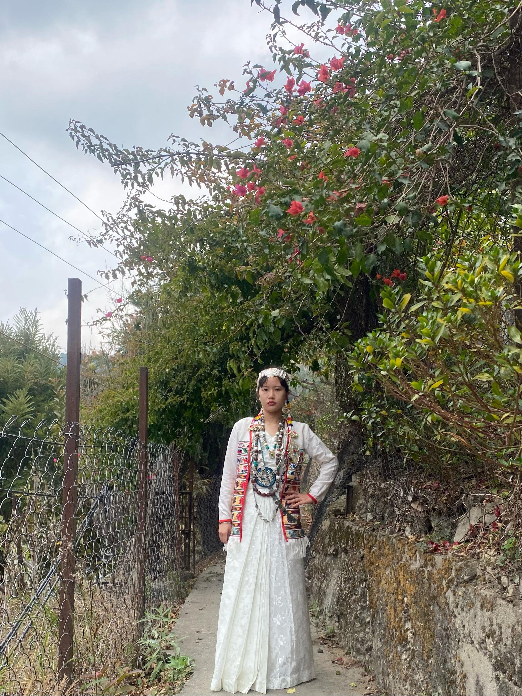

A newly wed Bagun couple

A Modern Teenage Bugun girl in her traditional attire
Both men and women cover their body, neck to knee, with loose endi cloth, a sort of gown, obtained from the markets in the plains. Both sexes wear a colorful waist band, securing the white gown at the waist. A white cloth wrapping covers a man’s leg from below the knees to the ankle, with its upper edge decorated with cowries or colorful beads. The man sports a bamboo hat.